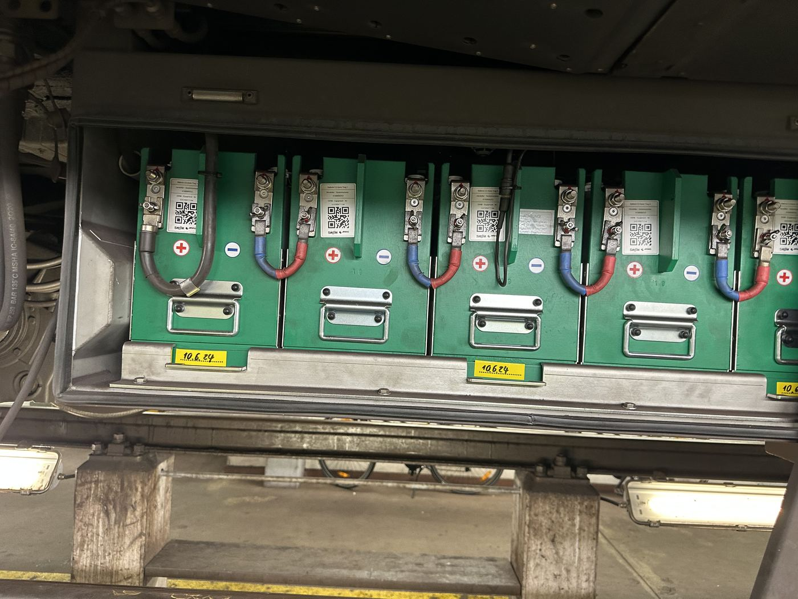

Reihe grüner Batteriemodule im Unterbau, jedes mit eigenem QR-Code und Wartungsdatum.
Bauteil auf der Seite „Unterbau“
24-V-DC-Hilfsbatterien versorgen Bordsysteme wie den Bordcomputer, die Innenraumbeleuchtung und die Türsteuerung – nicht jedoch den Fahrantrieb, der über die Stromschiene gespeist wird.
Die Module sind so ausgelegt, dass bei einem kurzzeitigen Ausfall der Stromschiene (z. B. Fahrleitungslücke, Störung) die sicherheitsrelevante Bordelektronik, Notbeleuchtung und Kommunikationssysteme weiterlaufen. Jedes Modul trägt einen eigenen QR-Code zur Wartungsverfolgung sowie ein Etikett mit dem Datum der letzten Prüfung – ein Beispiel für digitalisiertes Ersatzteil- und Wartungsmanagement im Fuhrpark.
Aus betriebswirtschaftlicher Sicht ist die Batteriewartung ein planbarer Kostenfaktor: Prüfintervalle, Austauschzyklen und Ersatzteilbevorratung werden zentral gesteuert, um Ausfallzeiten der Fahrzeuge zu minimieren.